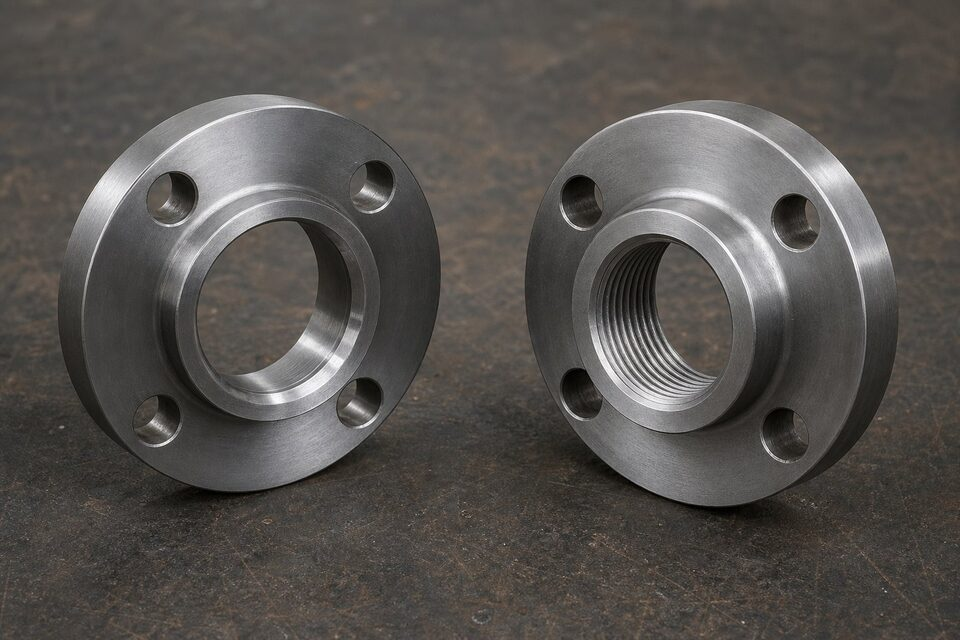

جایگاه این دو فلنج
در سایزهای کوچک که جوشکاری لببهلب دشوار است، دو راهحل اصلی وجود دارد: اتصال با کاسه جوشی و اتصال رزوهای. هر دو در کلاسهای فشاری بالا عرضه میشوند و انتخاب بین آنها به حساسیت سرویس و نیاز به دمونتاژ بستگی دارد.

جدول مقایسه
| معیار | جوشی ساکت | رزوهای |
|---|---|---|
| روش اتصال | جوش گوشهای در کاسه | پیچیدن روی رزوه لوله |
| آببندی | بسیار خوب | متوسط؛ وابسته به رزوه و نوار |
| دمونتاژ | با برش جوش | آسان و مکرر |
| ریسک نشتی | کم | بیشتر در سیکل حرارتی |
| نیاز به جوشکار | بله | خیر |
| کاربرد رایج | خطوط پرفشار حساس | نقاط دمونتاژ و سرویس غیرحساس |
نکات فلنج جوشی ساکت
- رعایت فاصله انبساطی پیش از جوشکاری الزامی است.
- در سرویسهای خورنده، شکاف کاسه میتواند نقطه شروع خوردگی باشد.
- کیفیت جوش گوشهای باید در بازرسی کنترل شود.
- برای سرویس ترکخوردگی حساس، ارزیابی تکمیلی انجام شود.
نکات فلنج رزوهای
- جنس رزوه و لوله باید سازگار و از گریپاژ جلوگیری شود.
- در سیکلهای حرارتی و ارتعاشی، ریسک نشتی افزایش مییابد.
- برای آببندی از نوار یا خمیر مناسب استفاده شود.
- در سرویسهای حساس فرایندی، استفاده محدود شود.
راهنمای انتخاب
- سرویس حساس با آببندی مطمئن: جوشی ساکت.
- نیاز به دمونتاژ مکرر بدون جوشکاری: رزوهای.
- سیکل حرارتی سنگین: از رزوهای پرهیز شود.
- در همه حالات، کلاس فشاری و متریال را با خط هماهنگ کنید.
محدوده سایز و کلاس
این دو فلنج معمولاً در سایزهای کوچک و کلاسهای فشاری متوسط تا بالا عرضه میشوند. در سایزهای بزرگ و سرویسهای فرایندی اصلی، فلنجهای جوشی لببهلب انتخاب استاندارد هستند و کاربرد این دو نوع محدود میشود. بنابراین انتخاب آنها بیشتر در خطوط فرعی، ابزار دقیق و نقاط نمونهگیری مطرح است.
چکلیست استعلام
- سایز و کلاس فشاری را ذکر کنید.
- نوع اتصال را صریح بنویسید.
- متریال همخوان با لوله انتخاب کنید.
- در رزوهای، نوع رزوه را مشخص کنید.
- گواهی مواد با شماره ذوب درخواست کنید.
نصب، بازرسی و خطاهای رایج
هر دو نوع فلنج جوشی ساکت و رزوهای، در سایزهای کوچک و خطوط ابزار دقیق کاربرد زیادی دارند؛ اما نصب هر کدام ظرافتهای خاصی دارد که نادیده گرفتن آنها، خود را به شکل نشتی در بهرهبرداری نشان میدهد. در فلنج جوشی ساکت، مهمترین نکته همان فاصله انتهای لوله تا کف ساکت است؛ این فاصله کوچک، امکان انبساط حرارتی را فراهم میکند و حذف آن، تمرکز تنش در ناحیه جوش را در پی دارد. تنظیم فاصله قبل از جوشکاری و حفظ آن در حین کار، یک دقیقه زمان میبرد اما از ترکهای پرهزینه جلوگیری میکند. تمیزی داخل ساکت از زنگ و روغن قبل از جوشکاری و کنترل اندازه جوش محیطی متناسب مشخصات، دیگر نکات کلیدی نصباند. در بازرسی، کنترل چشمی جوش انجامشده از نظر ترک، تخلخل و یکنواختی، و در نقاط حساس، آزمون غیرمخرب متناسب اهمیت دارد. در فلنج رزوهای، خطاها جنس دیگری دارند: استفاده از ماده آببند نامتناسب با سیال و دما، سفت کردن بیش از حد که رزوهها را هرز یا بدنه را تحت تنش میکند و استفاده از اهرم اضافی روی آچار که لبههای اتصال را آسیب میزند. یک نکته مهم در فلنجهای رزوهای، کنترل نوع رزوه است؛ استانداردهای مختلف رزوه ظاهری شبیه دارند اما با هم قابل تعویض نیستند و اتصال رزوه ناسازگار، حتی اگر در ابتدا سفت شود، در فشار نشتی خواهد داشت. در خطوطی که دورههای تعمیر مکرر دارند، باز و بسته شدنهای متعدد به رزوهها آسیب میزند و باید وضعیت آنها در هر سرویس کنترل شود. در انتخاب بین این دو، نباید فراموش کرد که اتصال رزوهای در سایزهای بزرگتر و فشارهای بالا معمولا توصیه نمیشود و بسیاری از استانداردهای کارفرمایی، کاربرد آن را به سایزها و سرویسهای خاصی محدود کردهاند؛ این محدودیتها را در برگه مشخصات پروژه خود کنترل کنید. در نهایت، هر دو نوع اتصال در سرویسهای سمی یا قابل اشتعال با احتیاط بیشتری استفاده میشوند و در بسیاری موارد، جوشی ساکت یا جوشی لببهلب ترجیح داده میشود.
جمعبندی
بین جوشی ساکت و رزوهای، حساسیت سرویس و نیاز به دمونتاژ تصمیمگیرنده است. انتخاب درست از ابتدا، از نشتی و دوبارهکاری جلوگیری میکند.
سوالات رایج
فلنج جوشی ساکت چگونه نصب میشود؟
انتهای لوله داخل کاسه فلنج قرار میگیرد و یک جوش گوشهای دور تا دور آن زده میشود. پیش از جوش، باید فاصله انبساطی کوچکی بین انتهای لوله و ته کاسه رعایت شود تا در اثر انبساط حرارتی، تنش ایجاد نشود.
فلنج رزوهای چه زمانی انتخاب میشود؟
وقتی نیاز به دمونتاژ مکرر بدون جوشکاری باشد یا جوشکاری در محل ممکن نباشد؛ مانند خطوط ابزار دقیق، نقاط نمونهگیری و برخی سرویسهای تاسیساتی.
ریسک اصلی اتصال رزوهای چیست؟
نشتی در سیکلهای حرارتی و ارتعاشی، و تمرکز تنش در ریشه رزوه. به همین دلیل در خطوط پرفشار با سیکل کاری سنگین، استفاده از رزوه محدود میشود.
آیا میتوان رزوه را جوش کرد؟
تبدیل رزوه به جوش با آببندی کامل تضمینپذیر نیست و معمولاً توصیه نمیشود؛ بهتر است از ابتدا نوع اتصال متناسب با سرویس انتخاب شود.
مطالب مرتبط
- راهنمای اتصالات فورج جوشی ساکت و رزوهای
- استاندارد فلنجهای جوشی (ASME B16.5)
- راهنمای جنس و متریال فلنج صنعتی
- راهنمای انواع گسکت صنعتی
- راهنمای اتصالات فیتینگ پایپینگ
با ذکر سایز، کلاس و نوع اتصال، فلنج جوشی ساکت یا رزوهای با گواهی مواد کامل عرضه میشود. برای خطوط ابزار دقیق، جوشی ساکت پیشنهاد میگردد.
مشاهده صفحه محصول ← ثبت RFQ همین محصولتامین این تجهیزات را به پیشرو تجهیز فرتاک بسپارید
شرکت پیشرو تجهیز فرتاک تامینکننده تخصصی تجهیزات صنعتی برای پروژههای نفت، گاز، پتروشیمی، فولاد و نیروگاهی است. برای دریافت پیشنهاد فنی و قیمت، استعلام (RFQ) خود را ثبت کنید تا کارشناسان مهندسی فروش در کوتاهترین زمان پاسخ دهند.
- تامین فلنجفلنجهای سایز کوچک با گواهی مواد
- تامین تجهیزات پایپینگلوله و اتصالات هماهنگ با فلنج